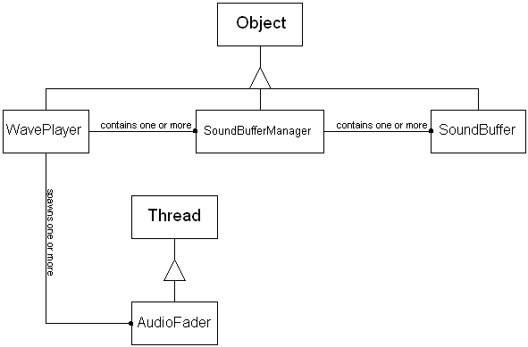

Audio Subsystem
Last Updated: [98/05/19 Ronin]
Introduction
The audio subsystem used by Microcosm uses Microsoft DirectSound to play wav files. This subsystem is used to play all the ambient sounds heard when running Microcosm. This is separate from the point-to-point (P2P) subsystem, also known as vox chat, used to provide the audio chat capability. Most sounds are created and played by the Dynamics Engine code.
Related Documents
Requirements
Windows 95/NT.
Win95 – DirectX v3.0 or better.
WinNT 4.0 – Service Pack 3.
Sound card
Architecture
Hierarchy of audio subsystem code components. Level 3 depends on level 2, which depends on level 1.
|
LEVEL 3: EC Java code |
|
LEVEL 2: EC native code |
|
LEVEL 1: DirectSound support via DirectX on 95 or SP3 on NT |
A Rumbaugh object model of level 3 of the audio subsystem architecture:

Current Architecture Overview
There are three levels of code used by the audio subsystem. The first level is the DirectSound API. On Win95, this is part of the DirectX 3.0 (or 5.0) installation. On NT 4.0, this is part of service pack 3.
The second level is the JNI compliant native interface to the DirectSound API. This code can be found in the cosmsound.cpp file.
The third level is an object model that provides a fairly simple interface for playing and managing sounds. There are five java classes defined in this model. However, from a user’s perspective, all the API for creating and managing sounds is accessible from just one class, WavePlayer.
The audio subsystem is currently designed to manage three different categories of sounds: alert, background and foreground. Alert sounds are those sounds used to notify the user of some error or warning condition, such as the beep that plays when you attempt to type beyond the end of a word balloon. Background sounds are the sounds associated with each region. Foreground sounds are generally associated with individual objects or gestures. The API and implementation for all three sound categories is essentially the same. The distinction between alert, background and foreground is made so that the individual sound categories may be toggled on or off.
Any sound can have its volume independently set at the time it is created. Each category of sound has a global volume control, which can be adjusted or muted. Sounds may also be looped to play continuously. Looping is used primarily for background sounds, but can also be used on foreground and alert sounds.
Proposed Architecture Overview
None at this time.
Off the shelf alternatives
The new java sound API now includes support for a more standard set of audio file formats, including wav files. This may be a more appealing solution than using DirectSound as it would eliminate the need for any native code and be cross-platform compatible. However, I don’t think these are compelling reasons for dumping the current implementation, given our goals and schedule. Also, the current system works well enough, so I would probably put this towards the bottom of things to change.
Other Design Objectives, Constraints and Assumptions
None.
Current implementation
- WavePlayer – A java class used to manage the alert, background and foreground sound systems. This class provides the complete API for other programmers to use for playing ambient sounds (see example code below). WavePlayer provides the capability to create a sound, assign it a volume and make it loop. In addition, WavePlayer manages three categories of sound: alert, background and foreground. This allows separate control over each category, primarily for muting purposes. WavePlayer also provides for cross-fading audio during transitions. Audio fading is also done when muting or unmuting sounds via the AudioFader. Finally, WavePlayer provides a suspend/resume mechanism for use during P2P sessions. This allows WavePlayer to continue functioning as a sound manager while DirectSound is unavailable. When suspend is called, WavePlayer saves the state of looping sounds and disables DirectSound, which frees the sound card for P2P use. During suspend mode, everything operates as normal, except no sounds are actually played. When resume is called, WavePlayer restarts DirectSound and starts up any looping sounds that need to be started.
- SoundBufferManager – A java class that manages multiple SoundBuffer objects. In the current implementation of WavePlayer, one SoundBufferManager class is created for each category of sounds: alert, background and foreground. The SoundBufferManager creates and manages a SoundBuffer object for each sound that the WavePlayer asks it to create.
- SoundBuffer – A java class that is basically an interface to the native DirectSound API for creating and playing sounds. This class makes use of the native calls found in the cosmsound.dll.
- AudioFader – A java thread that is used to fade a sound in or out. Its only purpose is to prevent audio from chopping off or starting up too quickly. Currently, it is used only when explicitly muting or unmuting sounds via the preferences window. Cross-fading of audio during transitions is tied to the dynamics engine transition clock (which ends up not cross-fading very well). This class is not very generic and is dependent on the WavePlayer. It does create a thread, but it is a very temporary thread.
- CosmSound.cpp – This file contains JNI functions for making DirectSound calls as well as parsing wav data as it comes out of the repository.
- Wave.c – This file is no longer used by the current implementation. It contains routines for accessing data directly from a .wav file. When I moved the sounds into the repository, these routines would no longer function. All the parsing of the wav data is done in the cosmsound.cpp file.
- GetHwnd.c – A kludgey way to get the HWND object from Windows. This can be easily done from Java, and the code is there in WavePlayer (but commented out). However, because of our screwy development environment, and the parallel Unix/Windows build process, I had to switch back to the kludgey way of doing it. So this file is necessary, but could probably be replaced by the Java code in the new world.
Which directories on our tree does this subsystem cover?
The audio subsystem files are found in src/cosm1/ui/sound and are part of package ec.cosm.ui.sound.
Is it JavaDoc'ed?
Not yet.
Examples
To play a sound:
WavePlayer wp;
Object soundKey;
//You can do this once, cache the value and pass it around. There
//is only a single WavePlayer object ever created.
try {
wp = WavePlayer.GetWavePlayer();
} catch (SoundException e) {
wp = null; //This would happen if DirectSound was never loaded,
//e.g. if you didn't have DirectSound installed on
//your system.
}
//This needs to be done for each sound you want to play.
//Replace <SoundType> with Alert, Background or Foreground.
if (wp != null) {
soundKey = wp.create<SoundType>Sound(soundFile);
wp.play<SoundType>Sound(soundKey);
//or wp.play<SoundType>Sound(soundKey, loop);
//or wp.play<SoundType>Sound(soundKey, volume);
//or wp.play<SoundType>Sound(soundKey, loop, volume);
}Loop is a boolean value. Volume is a floating point. It represents a logarithmic scale between 0.0f and 1.0f. For example, 1.0f is maximum gain (i.e. whatever the sound was recorded at) and 0.75f is about 1/16 of 1.0f.
If you are going to be playing the same sound several times in the same region, you can cache the soundKey. But soundKeys do not survive region transitions.
------------
To mute a category of sounds:
//Get the waveplayer object, as above.
//Replace <SoundType> with Alert, Background or Foreground.
wp.mute<SoundType>Sounds(true); //false will unmute.
Testing and Debugging
The audio subsystem can be traced via Trace.sound. The ‘sound’ category is one of the standard tracing components.
Design Issues
Resolved Issues
- DirectSound and P2P both require complete control over the sound card. Several options for handling the interaction between DirectSound and P2P were considered:
- Use P2P to play all ambient sounds. The P2P native API has the capability to play wav files, and also mix them with the voice output. However, it can only handle wav files with the format: 8000Hz, 16bit, mono. Also, the P2P native code is flaky, not to mention unsupported. We probably would not want to rely on it for playing ambient sounds, even if it did support multiple wav formats.
- Send P2P data to DirectSound for playback. The P2P native API provides an (untested) mechanism for grabbing the voice data before it is played. Presumably this data could then be sent to DirectSound for playback. The problem is that using DirectSound would add too much additional latency to the playback of the voice data.
- The current implementation completely shuts down DirectSound when P2P is activated. After P2P is done, DirectSound is restarted and picks up where it left off. It continues playing any looping sounds that were playing, unless they were canceled, e.g. by a region transition. This works well enough, but is clearly not very elegant. Also,
Open Issues
- The Rumbaugh diagram above is slightly misleading. It shows that the WavePlayer can contain one or more SoundBufferManager objects. The current implementation of WavePlayer has a predefined set of three SoundBufferManager objects. One each for background, foreground and alert sounds. It would be better to allow for a variable number, as the diagram suggests.
- The DirectSound and P2P subsystems are not well integrated. They cannot both be running at the same time.
- There is no mechanism in place for synchronizing sounds to gestures, for example, footsteps.
- A sound cannot be looped a finite number of times. It can loop continuously or not at all.
- The AudioFader should be more generic. For better cross-fading during transitions, this class should be used instead of the current implementation, which keys off the dynamics engine transition "clock".